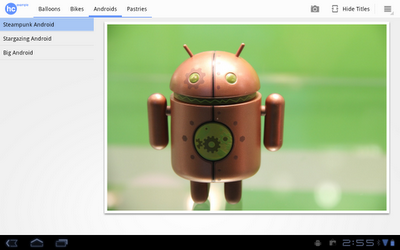
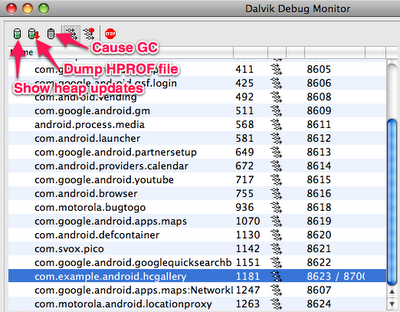
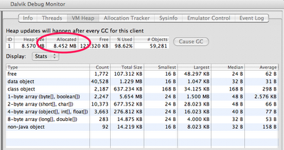
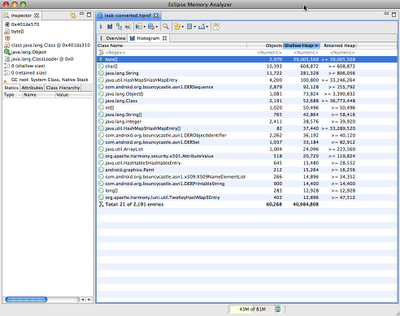
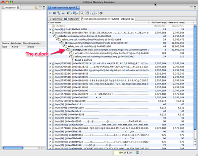

В Dalvik есть сборщик мусора, но это не значит, что можно игнорировать управление памятью. Даже наоборот — нужно быть особенно внимательным при использовании памяти, которая, как известно, на мобильных устройствах ограничена. В этой статье будут рассмотрены инструменты, которые значительно помогают следить за тем, как приложение использует память.
Некоторые проблемы от чрезмерного использования памяти вполне очевидны. Например, в вашем приложении постоянно происходит утечка памяти, когда пользователь прикасается к экрану, тогда это в конечном итоге, возможно, вызовет
OutOfMemoryError, и произойдет сбой и закрытие приложения. Другие проблемы, более тонкие, чем эта могут приводить к общему спаду производительности приложения и системы в целом (потому что сборщик мусора будет вызываться более часто и на более продолжительное время).
Инструменты
Android SDK обеспечивает два основных устройства для профилирования использования памяти приложением: вкладка Allocation Tracker в DDMS и дампы кучи (heap dumps). Allocation Tracker может быть полезен в том случае, когда вы хотите узнать об использовании памяти в конкретный период времени, так как он не дает информации о полном состояния кучи, которая выделяется под приложение. За более подробной информацией об Allocation Tracker можно обратиться к статье Tracking Memory Allocations. Остальная часть этой статьи будет посвящена исследования дампов кучи, так как это более мощный инструмент.
Дамп кучи — это снимок состояния всей кучи приложения, который хранится в бинарном файле, формата HPROF. Dalvik использует формат, который похож на тот, который используется инструментом HPROF в Java, но не является точно таким же.
Есть несколько способов создать дамп кучи выполняющегося Android приложения. Первый — использовать кнопку Dump HPROF file в DDMS. Если вам нужно выбрать момент создания дампа более точно, то можно создать его программно, при помощи метода android.os.Debug.dumpHprofData().
Для анализа можно использовать стандартный инструмент jhat или Eclipse Memory Analyzer (MAT). Однако, сначала нужно конвертировать .hprof файл из Dalvik формата в J2SE HPROF формат. Для этого используется утилита hprof-conv, которая поставляется с Android SDK:
hprof-conv dump.hprof converted-dump.hprof
Пример: Отладка утечки памяти
В Dalvik программист не размещает что-либо явно в свободную память, поэтому могут возникать утечки, как в языках C и C++. Под «утечкой памяти» обычно понимают ситуацию, при которой вы продолжаете ссылаться на объект, который больше не нужен. Иногда, одна единственная ссылка может предотвратить вызов сборщика мусора для удаления большого набора объектов.
Давайте рассмотрим приложение Honeycomb Gallery sample app из Android SDK. Это простая фотогалерея, которая демонстрирует использование неких методов нового API в Honeycomb. Сейчас мы преднамеренно создадим утечку памяти, чтобы затем продемонстрировать метод отладки.

Представим себе, что мы хотим, чтобы приложение получало изображения по сети. Чтобы сделать его более отзывчивым к пользователю, возможно, стоит реализовать кэш для хранения недавно просмотренных изображений. Мы можем это сделать, внеся некоторые изменения в ContentFragment.java. В начале класса объявим и инициализируем новую переменную:
private static HashMap<String,Bitmap> sBitmapCache = new HashMap<String,Bitmap>();
В этом отображении мы будем кэшировать загруженные Bitmap'ы. Теперь можно изменить метод updateContentAndRecycleBitmap() для проверки кэша перед загрузкой и добавления Bitmap'ов в кэш после загрузки:
void updateContentAndRecycleBitmap(int category, int position) {
if (mCurrentActionMode != null) {
mCurrentActionMode.finish();
}
// Get the bitmap that needs to be drawn and update the ImageView.
// Check if the Bitmap is already in the cache
String bitmapId = "" + category + "." + position;
mBitmap = sBitmapCache.get(bitmapId);
if (mBitmap == null) {
// It's not in the cache, so load the Bitmap and add it to the cache.
// DANGER! We add items to this cache without ever removing any.
mBitmap = Directory.getCategory(category).getEntry(position)
.getBitmap(getResources());
sBitmapCache.put(bitmapId, mBitmap);
}
((ImageView) getView().findViewById(R.id.image)).setImageBitmap(mBitmap);
}
Здесь я преднамеренно создал утечку памяти: Bitmap'ы добавляются в кэш, но не удаляются из него. В реальном приложении очевидно, что размер кэша нужно ограничивать.
Исследование кучи с помощью DDMS
Dalvik Debug Monitor Server (DDMS) — это один из главных инструментов для отладки в Android. Он является частью плагина ADT к среде разработки Eclipse, его также можно найти в папке tools/ вашего Android SDK. Для более подробной информации можно прочесть Using DDMS.
Давайте используем DDMS для анализа использования кучи нашим приложением. Вы можете запустить DDMS двумя способами:

Выберите процесс com.example.android.hcgallery в левой панели и кликните на кнопку Show heap updates на панели инструментов. Затем переключитесь на вкладку VM Heap в DDMS. Вы увидите некоторую базовую информацию об использовании кучи, которая будет обновляться при каждом вызове сборщика мусора. Чтобы увидеть первое обновление, кликните на кнопку Cause GC.

Можно заметить, что «живые» объекты занимают в памяти чуть меньше 8Мб (см. на колонку Allocated ). Теперь пролистаем фотографии, и можно будет увидеть, как это число увеличивается. Так как в приложении всего 13 фотографий, то утечка памяти ограничена. В некотором смысле, это наихудший случай, который может получиться, поэтому здесь никогда не будет OutOfMemoryError.
Создание дампа кучи
Кликните по кнопке Dump HPROF file в панели инструментов DDMS, выберите место сохранения файла, и сконвертируйте его, используя утилиту hprof-conv. В этом примере, мы будем использовать отдельную версию MAT (1.0.1), её можно скачать здесь.
Если вы используете Eclipse, с установленным MAT, то после нажатия на кнопку «dump HPROF», файл автоматически конвертируется и откроется в окне Ecilpse.
Анализ дампа кучи при помощи MAT
Запустите MAT и загрузите HPROF-файл, который был только что создан. MAT — мощная утилита, и разъяснение всех её особенностей вне этого топика, поэтому я объясню только один из методов как можно определить утечку — при помощи вида «Гистограмма» (Histogram view). В этом виде можно увидеть список классов, отсортированных по числу экземпляров, shallow heap (общий размер памяти, занимаемый экземплярами), или retained heap (общая память, занимаемая экземплярами и объектами, на которые они ссылаются).

Если отсортировать по shallow heap, то можно увидеть, что вверху окажется число экземпляров byte[]. В Android 3.0 Bitmap'ы представляются в виде массивов из байтов, размер которых зависит от размера Bitmap'a. То есть понятно, что они представляют память, которая занимается нашими Bitmap'ами. Щелкните правой кнопкой на классе byte[] и выберите List Objects > with incoming references. Вы увидите список всех массивов из байтов, размещенных в куче.
Выберите один из больших объектов и раскройте его. В итоге вы увидите всю цепочку ссылок, которая образуется из-за этого объекта. Вот он — наш кэш для Bitmap'ов!

MAT не может дать точную информацию является ли это утечкой, так как он не знает, нужны ли эти объекты. Ответ знает только программист. В нашем случае, кэш очень большой, сравнительно со всем приложением, поэтому логично было бы ограничить его размер.
Сравнение дампов кучи с помощью MAT
При отладке утечек памяти, бывает полезно сравнить состояние кучи в разные моменты времени. Чтобы сделать это, создайте два HPROF файла (не забывайте их конвертировать утилитой hprof-conv).
Вот как вы можете сравнить эти два файла:
Заключение
В этой статье я показал как Allocation Tracker и дамп кучи могут помочь вам в анализе использования памяти. Я также показал, как MAT помогает отследить утечки памяти в приложении.